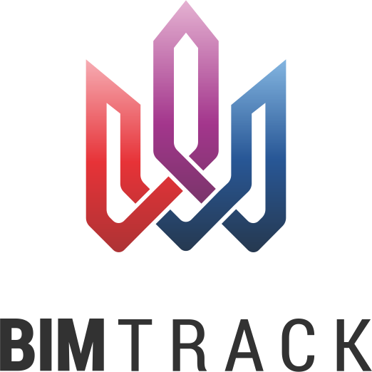
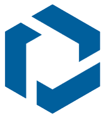
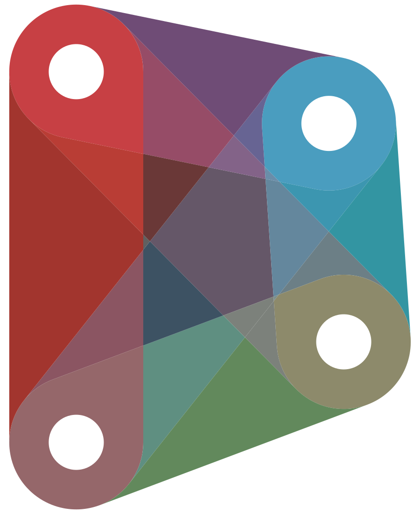
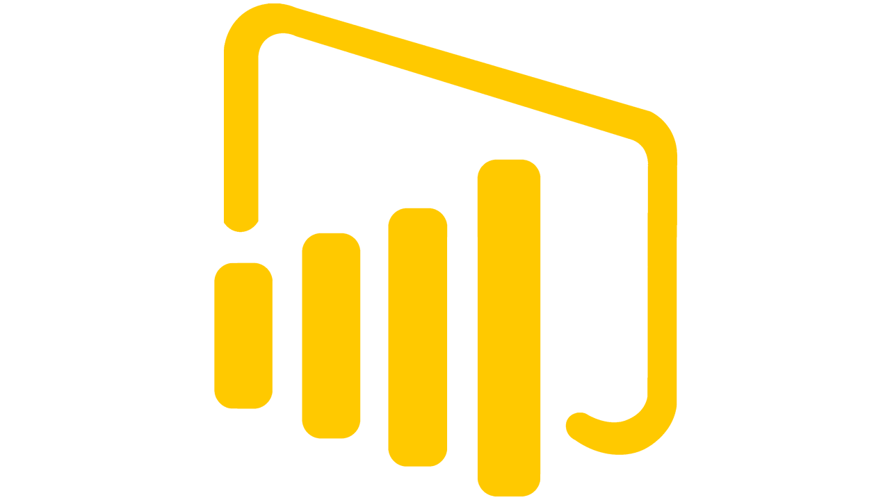
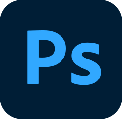

Architecte · Expert BIM · Synthèse TCE
WALID
DAIRA
DAIRA
Coordination technique et architecturale de projets complexes. De l'esquisse au DOE, je structure l'information BIM pour construire sans conflit.
WALID DAIRA
mail@example.com
France
France
+33 XX XX XX XX
linkedin
Français, Anglais
Fort d'une expérience diversifiée alliant compétences architecturales, techniques et BIM management, j'interviens sur des projets variés à différentes échelles. Je pilote l'implémentation du BIM de bout en bout : modélisation, coordination multi-lots, synthèse technique et architecturale, jusqu'à l'intégration des données d'exploitation.
formation
Diplôme BIM coordinateur2020 — 2022
IFAPME, Bruxelles
Master en Architecture - Patrimoine et Numérique2017 — 2019
Université Libre de Bruxelles
Diplôme d'état d'architecte2005 — 2010
Université Badji Mokhtar, Annaba, Algérie
Compétences clés
- Rigueur et sens du détail
- Esprit d'analyse et méthode
- Esprit collaboratif, orienté solution
- Communication et coordination multi-intervenants
Logiciels & Outils
Modélisation
Revit
ArchiCAD
AutoCAD
3D
3DsmaxCoordination, Synthèse & CDE
 Navisworks
NavisworksDalux

BIMTrack
BIMCollab Autodesk ACC
Autodesk ACC
TrimbleAutomatisation & Reporting

Dynamo Python
PythonpyRevit

Power BIIfcOpenShell
 Claude AI
Claude AIBureautique & Graphisme
Word
 Excel
ExcelInDesign

Photoshopexpérience
Consultant BIM et Synthèse TCEAoût 2025 — Présent
Azaléo, Paris
Mission : Responsable de synthèse BIM — TCE chez CAPINGELEC, Chartres
Projet : Extension de l'usine NOVONORDISK NNP6 · Budget : 1 Md€ · Phases : EXE, DOE
- Coordination interdisciplinaire entre les différents lots techniques et architecturaux en parallèle avec le planning des travaux
- Pilotage des réunions et workshops de synthèse en Fast Track
- Détection, analyse et suivi des clashs via BIM Track
- Proposition de solutions techniques et architecturales
- Production des documents associés : carnets de détails, plans de calepinage, gestion des réservations GOE et SOE
- Contrôle TQC : comparaison Nuage de Points / Maquette EXE et analyse des écarts
- Développement de solutions d'automatisation (Dynamo, pyRevit, IFC Checker APP)
BIM ManagerOct 2022 — Mai 2025
Fast Forward Architects & Engineers, Bruxelles
Missions :
- Responsable de déploiement BIM
- Management des projets BIM
- Synthèse technique et architecturale
- Développement et optimisation des workflows de modélisation, coordination et Scan to BIM (construction neuve / rénovation lourde)
- Rédaction des protocoles : conventions de modélisation, BEP, cahier des charges sous-traitants Scan to BIM
- Formation et accompagnement des équipes
- Développement des bibliothèques et gabarits pour tous les corps d'états
- Open BIM — IFC (normes BELUX, mapping IFC, intégration des données d'exploitation)
Projets :
- École IEHS EL HIKMA — 22 000 m², 45 M€, APD DCE EXE
- Hôpital AZ ZENO Blankenberge Aile E — 10 000 m², EXE
- BACARDI — projet mixte, 7 900 m², APS APD PC
- Contrat cadre Ministère de la Défense Belge — projets divers, toutes phases (intégration données d'exploitation)
- REGENT 45 — bureaux certifiés BREEAM, 7 600 m², 10 M€, APD DCE EXE
- BARTHELEMY — 17 appartements, 1 800 m², APD DCE
Architecte BIMJuin 2020 — Sept 2021
MetaForma Architettura, Bruxelles
Études et suivi de chantier, conception architecturale et design d'intérieur, métrés, estimation budgétaire, rédaction des cahiers des charges.
Architecte GérantNov 2012 — Août 2017
Elite Architecture Studio, Algérie
Gestion des études techniques et architecturales, concours d'architecture, dossiers d'exécution, suivi de chantiers. Projets publics : logements, bureaux de poste, aménagements urbains.
Architecte StagiaireSept 2010 — Sept 2012
Atelier New Concept, Algérie
Concours et études de projets divers (logements collectifs, bureaux), permis de construire, exécution et suivi de chantier.
Réalisations
selected projects

Un projet BIM ? Parlons-en.
Disponible pour missions de coordination BIM, synthèse architecturale et technique.
✓ Message envoyé. Je reviens sous 24h.